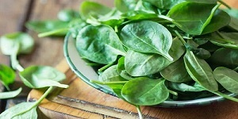
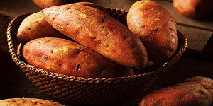

Food For Healthy Hair
1. Eggs Provide Protein

You hair is made up of protein, therefore it is important to ensure that you have enough protein in your diet. Protein is the building block of hair and eggs are one of the richest natural sources of protein.
2. Spinach and Other Dark Leafy Greens Provide Iron
Iron is an essential mineral that your hair cells require. In fact, a deficiency of iron in the body may cause hair loss. When your body is running low on iron, oxygen and nutrients are not getting transported to the hair roots and follicles adequately which can inhibit growth and make your strands weak.
3. Citrus Fruits to Get Your Dose of Vitamin C
Your body requires Vitamin C for iron absorption therefore; you need to add citrus fruits to your diet. Nutritionists recommend that one lime per day is enough to get your daily dose of Vitamin C. Just make yourself a chilled glass of nimbu paani (with honey or a healthy alternative to refined sugar) and you’re sorted. You could also opt for oranges. Vitamin C is also required for the production of collagen that make capillaries that connect to the hair shafts strong thus, ensuring regular supply of nutrients and quick hair growth.
4. Nuts and Seeds for Omega-3 Fatty Acids
Omega-3 fatty acids nourish the hair and support thickening. Since your body cannot produce these healthy fats, you need to derive them from your diet. Almonds and walnuts are really high in Omega-3 fatty acids. Similarly, flaxseeds can serve as mid-meal healthy snack while also supplying the essential fats to your hair.
5. Whole Grains to Obtain Biotin
Whole grains are rich in biotin along with iron, zinc and B vitamins. Biotin is required for cell proliferation and plays an important part in producing amino acids (protein) which are required for your hair to grow.
6. Carrots are Rich in Vitamin A
Drink carrot juice every day for quick hair growth. The hair contains the fastest growing tissues in the body and vitamin A is required for the growth of every cell. It also helps the scalp in producing the natural sebum oil which keeps it and the roots healthy to boost hair growth.
7. Avocado Offers Vitamin E
Vitamin E improves the blood circulation and helps the follicles work more efficiently to promote hair growth. It also maintains the oil and PH levels balance which if exceeds can clog the hair follicles and stop hair growth. Avocado is great source of Vitamin E and it is also rich in the heart healthy monounsaturated fats. You can add it to your breakfast sald or blend it into a green smoothie.
8. Salmon for Shine
Fish like salmon, sardines, and mackerel are packed with healthy omega-3 fatty acids. Your body can't make these healthy fats, so you have to get them from food or supplements. They help protect you from disease, but your body also needs them to grow hair and keep it shiny and full.
9. Guava to Prevent Breakage
This tropical fruit brims with vitamin C. It protects your hair from breaking. One cup of guava has 377 milligrams of vitamin C. That's more than four times the minimum daily recommended amount.
10. Sweet Potatoes to Fight Dull Locks
Have dry hair that's lost its shine? Sweet potatoes are filled with a good-for-you antioxidant called beta carotene. Your body turns beta carotene into vitamin A. That helps protect against dry, dull hair. It also encourages the glands in your scalp to make an oily fluid called sebum that keeps hair from drying out. You can also find beta carotene in other orange vegetables like carrots, pumpkin, cantaloupe, and mangoes.